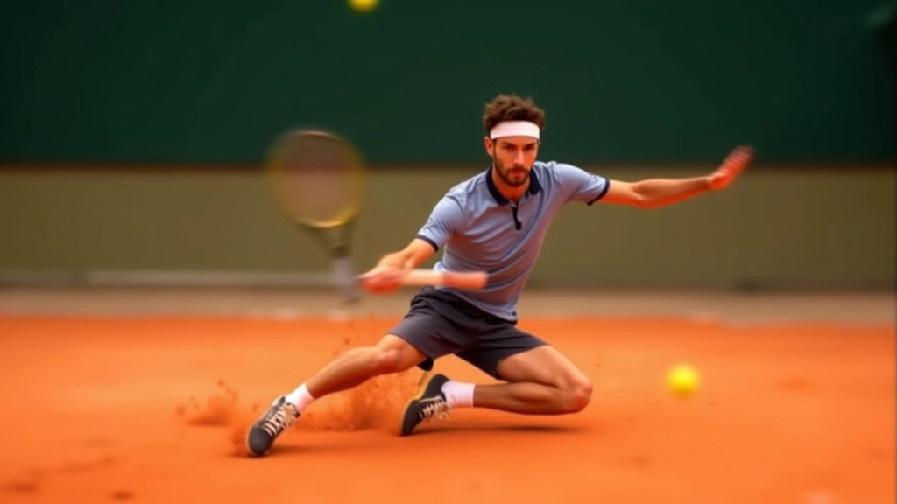
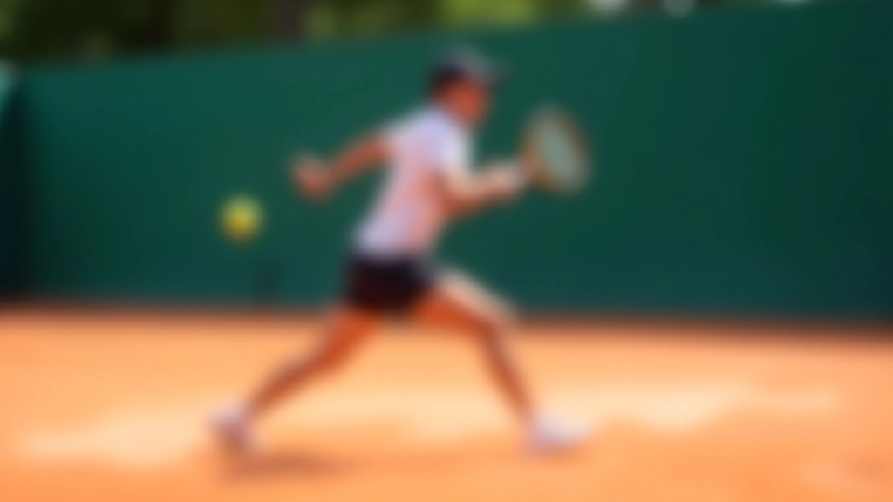
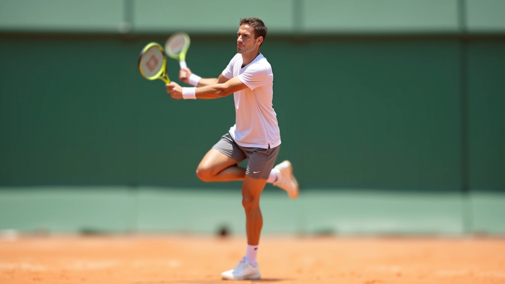
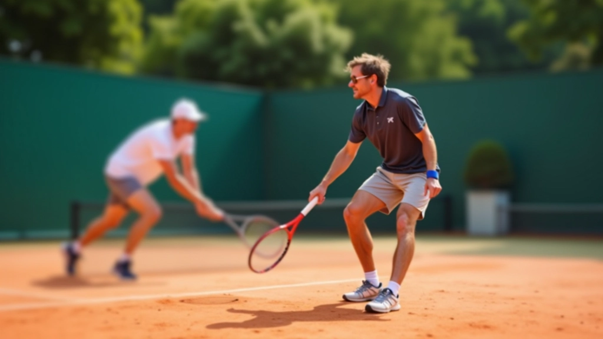

تنفيذ الضربات أثناء الانزلاق
كيفية الحفاظ على قوة الضربة والدقة عندما تكون في حالة انزلاق. نصائح من المحترفين لتحسين أدائك.
٧ دقائق
متقدم
سبتمبر ٢٠٢٦

لماذا تعتبر الضربات أثناء الانزلاق حاسمة؟
الانزلاق على الملاعب الترابية يختلف تماماً عن اللعب على الأسطح الأخرى. عندما تنزلق، جسمك في حالة حركة مستمرة، والاتزان يصبح تحدياً حقيقياً. لكن هذا هو ما يميز اللاعبين المحترفين — القدرة على تنفيذ ضربات قوية ودقيقة حتى وأنت في وضع غير مستقر.
المشكلة ليست أن تنزلق. المشكلة هي أن تحافظ على السيطرة أثناء الانزلاق. معظم اللاعبين الشباب يركضون للكرة ويحاولون إيقاف حركتهم قبل الضربة — وهذا خطأ كبير. الطريقة الصحيحة تماماً مختلفة.

01
استعداد الجسم قبل الانزلاق
كل شيء يبدأ قبل أن تنزلق. عندما تجري نحو الكرة، يجب أن تكون قدماك متقاربة، وركبتاك مثنيتين قليلاً. هذا الموضع يسمح لك بالتحكم الكامل في الحركة. لا تجري بكل قوتك ثم تحاول الإيقاف — هذا يدمر كل شيء.
في آخر ١-٢ متر قبل الكرة، ابدأ بتقليل السرعة تدريجياً. لا تتوقف بشكل مفاجئ. النزول للانزلاق يجب أن يكون حركة واحدة سلسة، لا توقف ثم انزلاق. تخيل أنك تتحرك مع الكرة، لا ضدها.
02
موضع القدم والدخول في الانزلاق
هذا هو الجزء الحاسم. عندما تبدأ الانزلاق، قدمك الخارجية (البعيدة عن الكرة) يجب أن تكون هي التي تلامس الأرض أولاً. قدمك الداخلية تنزلق على الطين. هذا يعطيك الثبات والسيطرة.
لا تنزلق بكلا قدميك — هذا يجعلك تفقد السيطرة تماماً. الهدف هو الانزلاق المُتحكم فيه، وليس الانجراف العشوائي. قدمك الخارجية توفر نقطة ارتكاز، وقدمك الداخلية تنزلق بسلاسة على الطين الناعم.
تنفيذ الضربة أثناء الانزلاق
الحفاظ على الدوران
الخطأ الأكثر شيوعاً هو أن اللاعبين يتوقفون عن الدوران عندما يبدأون الانزلاق. أنت لا تزال بحاجة إلى دوران كامل للجسم. الدوران يأتي من الأرجل والوركين، وليس من الذراعين فقط.
موضع الرأس والعينان
رأسك يجب أن يبقى مستقراً. لا تتابع الكرة بحركة الرأس الكاملة — استخدم العينين فقط. هذا يحافظ على توازن جسمك ويساعدك على الاحتفاظ بقوة الضربة. عندما يتحرك رأسك، يتحرك كل شيء معه، وتفقد الدقة.
نقطة التلامس والقوة
نقطة التلامس مع الكرة تحدث عندما تكون في قمة انزلاقك. هذا هو السر. تخيل أن انزلاقك والضربة يحدثان في نفس اللحظة. القوة لا تأتي من الذراع — تأتي من جسمك المتحرك والدوران.

نصائح عملية لتحسين الأداء
التدريب على السرعة المناسبة
لا تحاول الركض بأقصى سرعة. السرعة المناسبة هي التي تسمح لك بالتحكم. اختبر سرعات مختلفة أثناء التمرين. ستجد أن هناك نطاق سرعة محدد يعطيك أفضل نتائج.
تقوية الأساس والاستقرار
عضلات الأرجل والوركين هي أساس كل شيء. تمارين التوازن والقوة الأساسية حتمية. لاعب لديه قوة أساس ضعيفة لن يستطيع السيطرة على الانزلاق، مهما كانت تقنيته جيدة.
ممارسة الحركات البطيئة أولاً
لا تبدأ بالسرعة الكاملة. قضِ وقتاً في تمارين الحركة البطيئة، مع التركيز على الموضع والتقنية. عندما تتقن الحركة ببطء، يمكنك زيادة السرعة تدريجياً. هذا هو الطريق الصحيح، وليس العكس.
الحذاء المناسب يُحدث فرقاً كبيراً
حذاء التنس الجيد المصمم للطين يوفر الثبات والسيطرة. الحذاء الخاطئ يجعل الانزلاق خطراً وغير منتج. استثمر في حذاء مناسب — هذا ليس ترفاً، بل ضرورة.

الأخطاء الشائعة وكيفية تجنبها
الخطأ الأول: التوقف المفاجئ قبل الضربة
الكثير من اللاعبين يحاولون التوقف تماماً قبل الضربة. هذا يقتل كل الزخم. الحل هو الانزلاق السلس المستمر. لا تتوقف — استمر في الحركة أثناء الضربة.
الخطأ الثاني: فقدان دوران الجسم
عندما تركز على عدم السقوط، تنسى الدوران. الدوران ضروري للقوة. حتى أثناء الانزلاق، يجب أن تدور بجسمك بالكامل. هذا ليس اختياري — إنه أساسي.
الخطأ الثالث: الانزلاق بكلا القدمين
هذا يؤدي إلى فقدان السيطرة الكامل. قدم واحدة فقط تنزلق. الأخرى توفر الاستقرار. تذكر هذا دائماً: قدم واحدة تنزلق، وقدم واحدة تثبت.

الخلاصة: التمرين هو الحل الوحيد
لا توجد طريقة مختصرة. تنفيذ الضربات أثناء الانزلاق يتطلب ممارسة مستمرة. كل يوم تمرين تقضيه على الملعب الترابي يضيف خبرة. البدء ببطء، التركيز على التقنية، ثم زيادة السرعة تدريجياً — هذه هي الطريقة الصحيحة الوحيدة.
المحترفون الذين تراهم ينفذون ضربات مثالية أثناء الانزلاق لم يصلوا إلى هناك بالحظ. لقد قضوا سنوات في التدريب. أنت تستطيع فعل الشيء ذاته. ابدأ اليوم، وكن صبوراً مع نفسك.

كاتب المقالة
فريق ملعب الانزلاق التحريري
فريق التحرير
كتبه فريق ملعب الانزلاق التحريري، متخصصون في توفير إرشادات عملية وموثوقة عن تقنيات الانزلاق في التنس.


إخلاء المسؤولية
المعلومات الواردة في هذا المقال مخصصة لأغراض تعليمية وإرشادية عامة فقط. كل لاعب لديه احتياجات وقدرات مختلفة. يُنصح بشدة باستشارة مدرب تنس مؤهل قبل محاولة تطبيق هذه التقنيات، خاصة إذا كنت جديداً في رياضة التنس أو لديك أي قيود بدنية. الممارسة غير الصحيحة قد تؤدي إلى إصابات. يجب عليك تحمل المسؤولية الكاملة عن صحتك وسلامتك الجسدية.